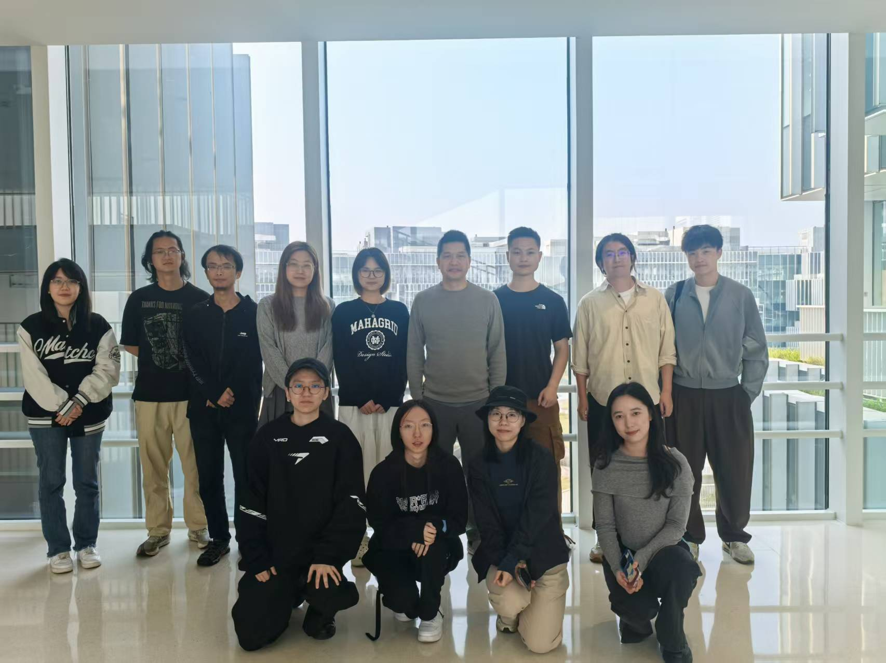
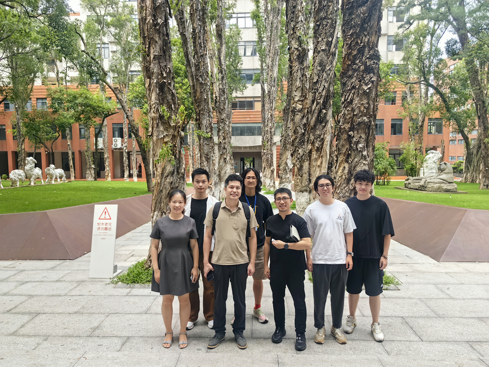

FIT-AWE / HKUST(GZ)
مختبر FIT-AWE في HKUST(GZ). ندرس التفاعل بين الإنسان والحاسوب والواقع الممتد والألعاب.
التفاعل والواقع الممتد والألعاب
تعرّف على باحثينا
استكشف أبحاثنا

FIT-AWE
فريقنا معًا
هل تهتم بالتقنيات التفاعلية؟ استكشف فرص البحث معنا.